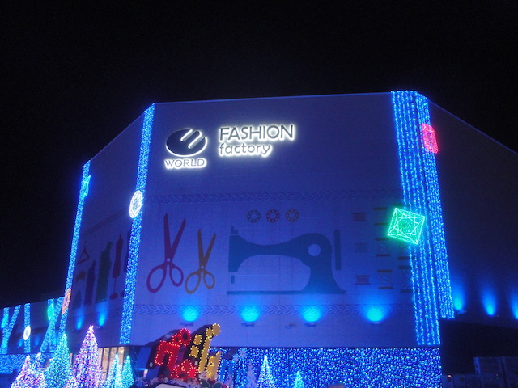
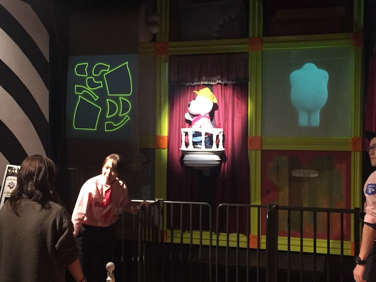

| |
Spin Runway Review

We're here at Yomiuriland, where we'll be reviewing Spin Runway. This is the parks spinning coaster. And man. This is a really good one. I really had no idea what to expect with this ride, and....it's really good. So the ride is themed to Land Dog running his own fashion factory. An interesting theming idea, but they really roll with it. The line itself has all sorts of fashion accessories. Even if there's no line, you stop to check it out (Well at least I did). Eventually, you reach the ride, get in the cars, pull down the lap bar, and you're off! So it starts out with a little bit of a dark ride section. Nothing crazy, you're just seeing Land Dog make more clothes. And of course, because its Land Dog, its fashionable! We roll around, check out more of the fashion, and then stop in a circular room. Look at the walls. We see Land Dog and his girlfriend (I don't know her name) on the screen, trying out all sorts of fancy clothes. We then see Land Dog and his girlfriend chasing after the outfits, and gaining points. Cause apparently, this is a video game? Yeah. I guess I never noticed that and didn't gain any points. Land Dog is very dissapointed in me. And....this is also the lifthill. Yeah, The entire time you're playing that video game, you're also going up a spiral lifthill and not even noticing! That is really freaking cool! But yeah, we're at the top. And after speaking to us in Japanese, which I don't understand. But Land Dog says one word in English at the top. "SPIN!!!" and sure enough, we begin to spin. Hard to say what exactly is going on. You're just dropping, twisting, and spinning. All while a disco is going on. What the hell sort of fashion factory is this!? This is like if Land Dog and Lady Gaga decided to team up and design a spinning coaster! And this thing spins a lot. With the music, the lights, and the spinning, this thing is just so much fun! So much so that I prefer this ride to the much bigger Bandit! I know that's controversial, since....Bandit is the much bigger coaster. And yeah. Bandit is fun. But this thing is just a ton of spinning colorful fun. Thank you Land Dog for providing us with a great spinning coaster. Do NOT miss this ride if you're at Yomiuriland.
7/10
Location: Yomiuriland
Opened: 2016
Built by: Gerstlauer
Last Ridden: November 8, 2018
Spin Runway Photos

Home
|